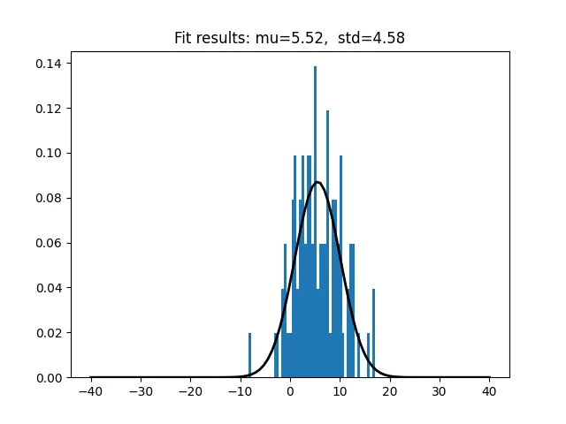
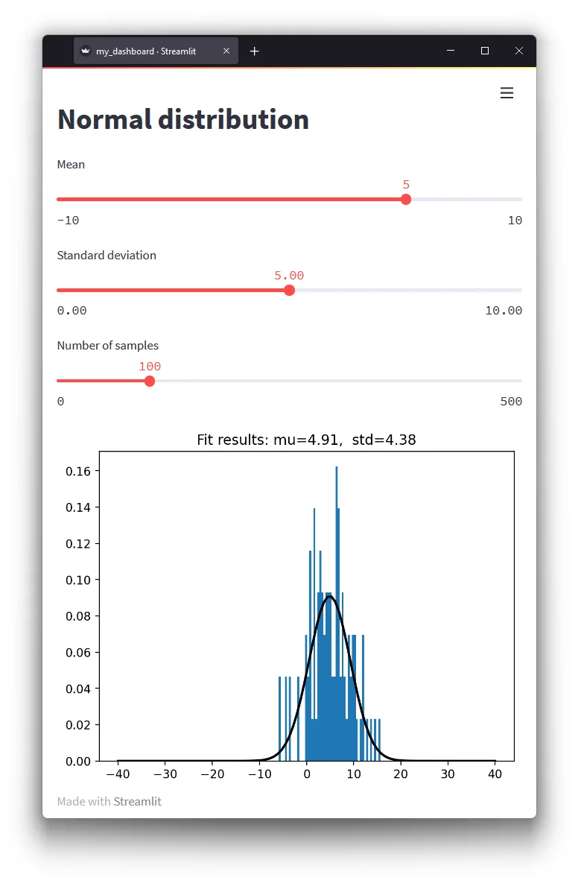

Forget about Jupyter Notebooks — showcase your research using Dashboards
2022-05-06
As a Python lover, I use Jupyter Notebooks for everything. Notebooks mix markdown, code, and inline plots, which makes them a fantastic tool for exploratory data analysis. I use them to develop and share code, prototype new ideas, explore libraries, play around with data, and create plots and visualizations. Notebooks can be rendered as static html and pdfs, so they are also excellent to write reports, documentation and tutorials… when the intent is to share the code alongside the data.
As a researcher, however, I find that the code sometimes gets in the way of the data I want to show. So when the intent is to share the data with a non-technical audience, what options do we have? Are there better alternatives?
The problem with notebooks
Before we continue, let’s take a step back and look at a few of the problems with Jupyter Notebooks.
There is no denying that Jupyter notebooks have become very popular over the last years to present research results. This means that the issues with Jupyter Notebooks are well known. My biggest gripes are:
- The non-linear execution model. Notebooks often contain hidden state that is difficult to reason about. This can make them difficult to use for beginners.
- Notebooks are difficult to share with a non-technical audience. They would need to know how to set up Python, install libraries, manage environments, and modify the code.
Notebooks can be hosted somewhere like binder (solving 2.), making the code immediately reproducible. Reproducible, only if one understands the code and how to run the notebook (including its quirks, see 1.). Here, the inline code can get in the way of itself. I have seen many notebooks spelling out what each variable does and how to run the code at the top. You would need some understanding of how the code works to use the notebooks.
Dashboards
That is where dashboards come into play.
Dashboards are a relatively new concept coming from the data science world making use of the modern web. In essence, dashboards are simple web-apps used to quickly glance at some data. Like a mini graphical interface for your data.
If you are using Python, these are the ones you should be looking at:
- Dash (2017, 883k downloads/month)
- Panel (2018, 387k downloads/month)
- Streamlit (2019, 930k downloads/month)
- voila (2019, 56k downloads/month)
All are excellent choices. For a full comparison, check out this blog post.
Streamlit
Out of these four, Streamlit stood out to me the most for its ease of use. For one of my projects, I have been playing with it to develop a simple data processing GUI. These are my initial impressions.
- After having used it for a week, I found it extremely straightforward to get started with.
- The linear execution model makes it easy to reason about the code (more on this later)
- There is no need to know any web development, as one of the goals of the library is to look good out-of-the box (spoiler alert: it does).
- The api is well-designed, easy-to-manage, and very Pythonic. You could get to grips with the entire API in a day. Some would say the API is limited, but in my opinion it has a very clear scope which fits my brain. It also helps that the documentation is well-structured, with clear explanations and examples.
- The streamlit developers claim its the fastest way to build data apps in Python. This sounds like a salespitch, but it might be true. You can turn any Python script into an interactive dashboard in minutes.
From a normal plot…
Let’s have a look at an example. As a researcher, I had plenty of Python scripts or notebooks lying around which just did this:
- Load or generate some data
- Apply some operations to the data
- Make some plots
I would endlessly tune the the parameters and re-run the script to get the right plot. No problem for me. But, when it came to sharing the scripts with my not-so-software-savvy colleagues, this meant taking on a support role. Think about setting up Python, managing environments, fixing bugs, feature requests, etc…
Sounds familiar?
The snippet below generates some data (a normal distribution), fits it, and creates a matplotlib plot out of it. It takes three parameters, mu_in, std_in, and size.
import numpy as np
from scipy.stats import norm
import matplotlib.pyplot as plt
mu_in = 5
std_in = 5.0
size = 100
def norm_dist(mu, std, size=100):
"""Generate normal distribution."""
return norm.rvs(mu, std, size=size)
data = norm_dist(mu_in, std_in, size=size)
# Fit the normal distribution
mu, std = norm.fit(data)
# Make some plots
x = np.linspace(-40, 40, 100)
y = norm.pdf(x, mu, std)
title = "f"Fit results: {mu=:.2f}, {std=:.2f}""
fig, ax = plt.subplots()
ax.hist(data, bins=50, density=True)
ax.plot(x, y, 'k', linewidth=2)
ax.set_title(title)
plt.show()My cool python script 😎
{kind=link}

…to a fancy dashboard
Let’s turn this into an interactive dashboard in four simple steps:
import streamlist as st😅- Add a title using
[st.title](https://docs.streamlit.io/library/api-reference/text) - Turn the input parameters into interactive sliders using
[st.slider](https://docs.streamlit.io/library/api-reference/widgets) - Tell streamlit about our plot using
[st.pyplot](https://docs.streamlit.io/library/api-reference/charts)
Note that we do not have to change any of the data generation, fitting, or plotting code!
import numpy as np
from scipy.stats import norm
import matplotlib.pyplot as plt
import streamlit as st
st.title('Normal distribution')
mu_in = st.slider('Mean', value=5, min_value=-10, max_value=10)
std_in = st.slider('Standard deviation', value=5.0, min_value=0.0, max_value=10.0)
size = st.slider('Number of samples', value=100, max_value=500)
def norm_dist(mu, std, size=100):
"""Generate normal distribution."""
return norm.rvs(mu, std, size=size)
data = norm_dist(mu_in, std_in, size=size)
# Fit the normal distribution
mu, std = norm.fit(data)
# Make some plots
...
st.pyplot(fig)Now as a dashboard 🐱💻
Then run the dashboard using:
streamlit run my_dashboard.pyThis will start a server, and the dashboard can be accessed through the browser (much like a Jupyter Notebook).
{kind=link}

How does this work?
The way Streamlit works is quite interesting. Everytime a slider is moved, a box is checked, or a button is pressed, Streamlit triggers a re-run of the script. The input values are updated. The javascript back-end keeps track of the values.
This means that the code itself executes linearly. In my view, this simplicity is what sets it apart. There is no need for any callbacks or complex flow controls. Your python scripts runs from top-to-bottom. This makes it easy to reason about the code. And with minimal modifications to the python code, any script can be turned into a dashboard.
Are there any downsides? Yes. Because streamlit re-runs the entire script on every update, it can feel a bit slow. Especially when updating a large number of plots. It can also get stuck on long-running functions. For performance optimizations, streamlit has some options to cache the result.
Plotting libraries
The example above uses matplotlib for the plots. Matplotlib has been the go-to plotting library for Python for many for a long time. It has been around for nearly two decades, and it is tighly integrated in the scientific python stack.
If you are familiar with matplotlib, you will know that it is great for making making publication quality plots. You will also know that making interactive plots can be a hassle.
Streamlit supports these libraries:
Modern plotting libraries like plotly, bokeh, and altair render directly to javascript. This means they are built for the web, and interactivity is built-in. This makes them better suited for web-apps. If you are going to make a dashboard, I recommend checking out one of these alternatives.
Sharing your dashboard
Alright, so now that we have made a fancy looking dashboard, so that anyone can play with the data. How do we make it available?
Streamlit uses a host/server model, which means you can run it on your own server.
Easier is to use the streamlit cloud to host your dashboard (it’s free for students and open-source projects). I found this also quite straightforward to set up. All I had to do was to create a repository on github with the code and a requirements file.
Then I logged into streamlit cloud using the Github SSO, and started a new app pointing at my repo and code.
Click here for the result! 🥳
Final remarks
In this blog post, I introduced streamlit and showed how it can be used to turn a python script into a dashboard, and host it online. An excellent way to showcase your research to a non-technical audience, if you ask me. The linear execution model makes it straightforward to adapt existing scripts. The code does not get in the way, and the result look awesome.
So next time you want to present some data in a notebook, consider using a dashboard instead.
All the code in this blog post is available from Github.
PS. Don't actually forget about notebooks, they are awesome!